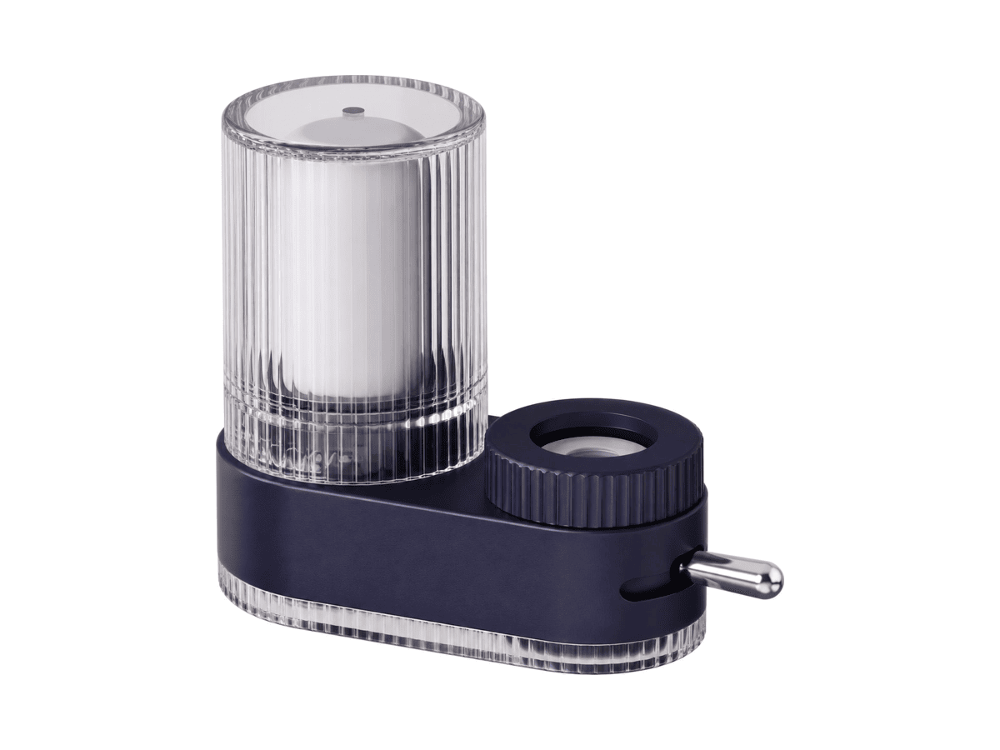
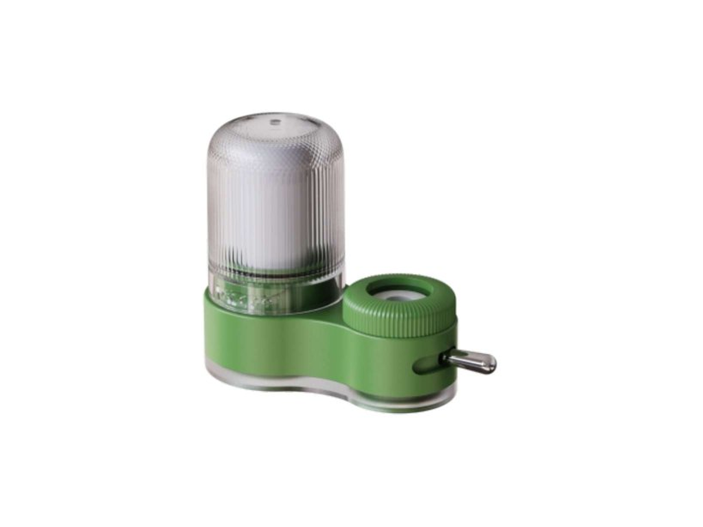
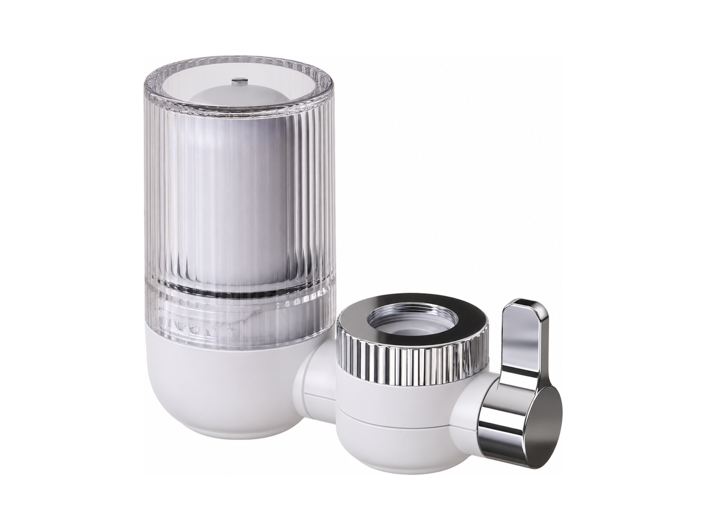
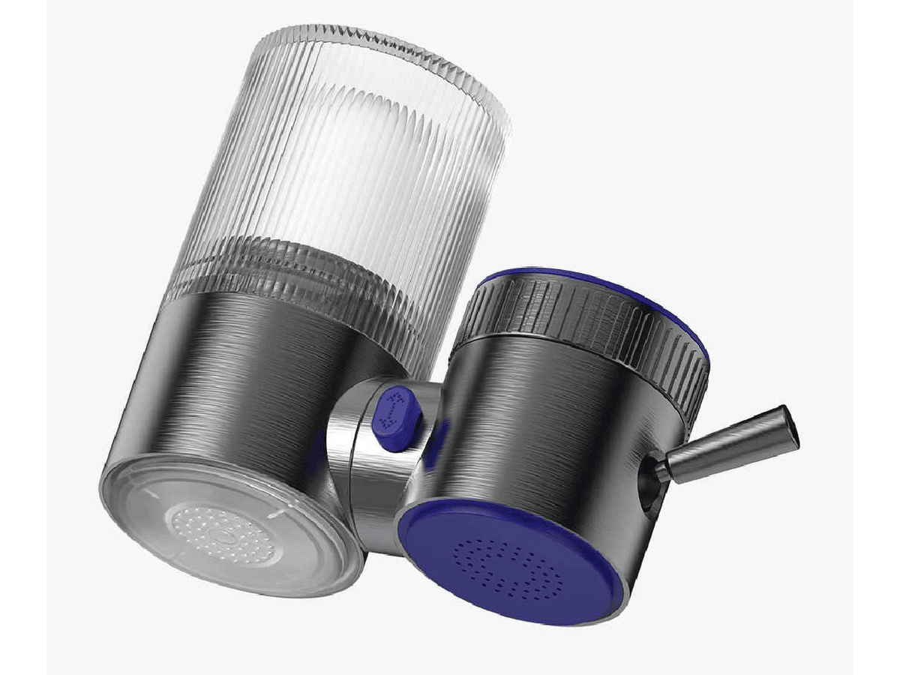
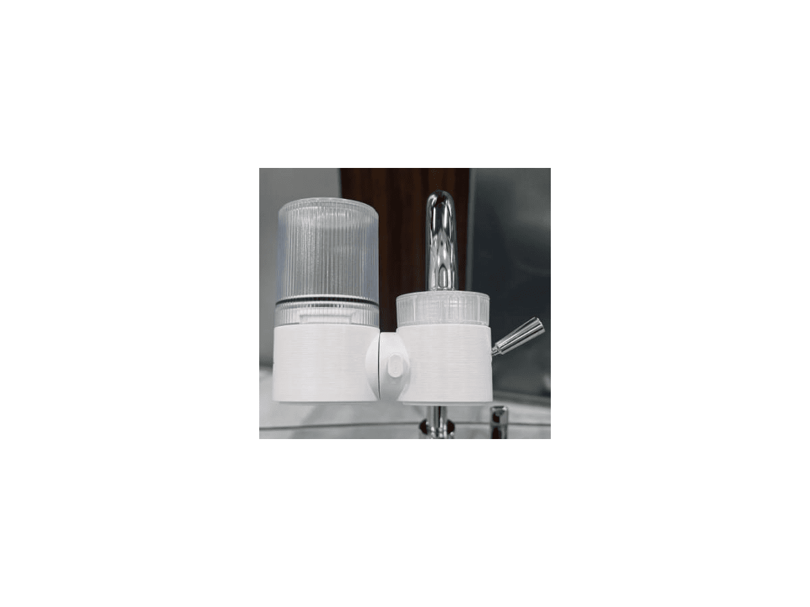
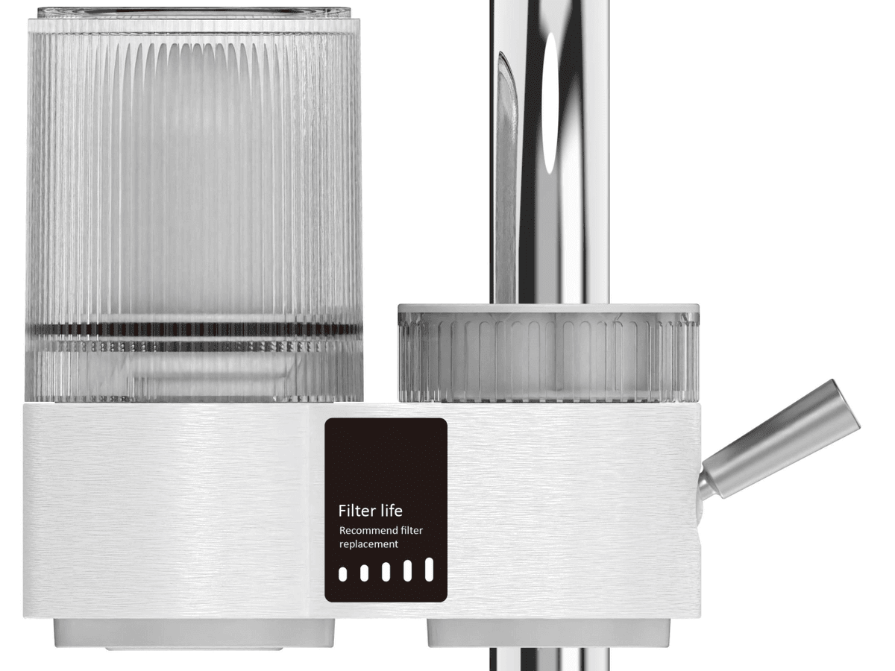

龙头
龙头RP-F01
经典龙头过滤器
SKU: RP-F01
起订量：询价时确认

龙头过滤器
龙头式净水器 (JK-B1) — 一体式与分体式
RP-F10（一体式）与 RP-F11（分体式）为同一龙头式净水器系列的两款型号，共用同一滤芯。关键规格：结构形式一体式或分体式。规格按型号及订单确认。
安装与表面处理选项按订单确认。
电压／频率可按目标国家配置，其他配置按订单确认。
RP-F10 两种罩体颜色可选——按 RP-F10 询价时请注明罩体颜色（深蓝色或绿色）；RP-F11 为分体式版本。
将鼠标悬停在款式图片上查看对应参数。触屏设备请点按图片。


各变体的完整参数并排对比。下方的规格表为 RP-F10 的参数。
| 规格 | RP-F10-1 — 深蓝色罩 (JK-B1) | RP-F10-2 — 绿色罩 (JK-B2) | RP-F10-3 — 分体式 (JK-A1) |
|---|---|---|---|
| 结构形式 | 一体式龙头过滤器 | 一体式龙头过滤器 | 分体式龙头过滤器 |
| 滤芯选项 | 按订单确认 | 按订单确认 | 按订单确认 |
| 出水口 | 原水/净水切换 | 原水/净水切换 | 原水/净水切换 |
| 额定流量／容量 | 按订单确认 | 按订单确认 | 按订单确认 |
| 过滤精度 | 按订单确认 | 按订单确认 | 按订单确认 |
| 压力／温度 | 按订单确认 | 按订单确认 | 按订单确认 |
| 滤芯寿命／尺寸 | 按订单确认 | 按订单确认 | 按订单确认 |
| 过滤方式 | 七级过滤 | 七级过滤 | 七级过滤 |
| 罩体 | 深蓝色 | 绿色 | — |
ROPureOEM 目录中的 7 行规格。
| 结构形式 | 一体式龙头过滤器 |
|---|---|
| 滤芯选项 | 按订单确认 |
| 出水口 | 原水/净水切换 |
| 额定流量／容量 | 按订单确认 |
| 过滤精度 | 按订单确认 |
| 压力／温度 | 按订单确认 |
| 滤芯寿命／尺寸 | 按订单确认 |
规格来源于 ROPureOEM 目录。尚未确认的数值标注为“按订单确认”，不发布未经确认的参数。
龙头经典龙头过滤器
SKU: RP-F01
起订量：询价时确认

龙头360° 可旋转龙头过滤器
SKU: RP-F02
起订量：询价时确认

龙头碳纤维龙头过滤器
SKU: RP-F06
起订量：询价时确认

龙头带滤芯寿命显示的龙头过滤器
SKU: RP-F08
起订量：询价时确认